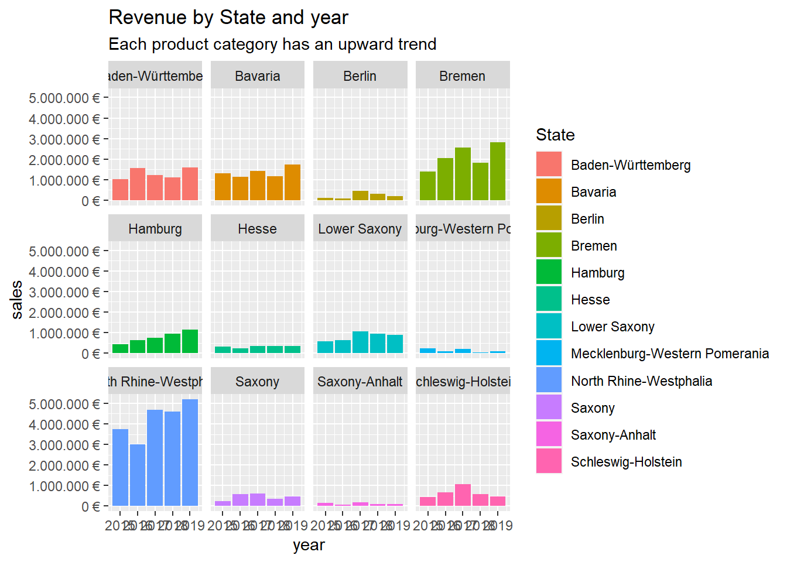
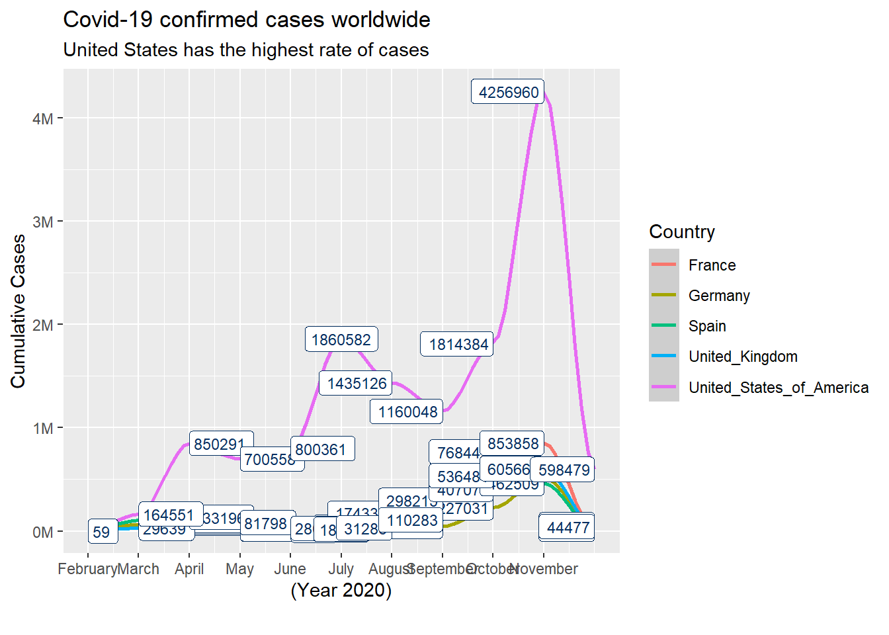
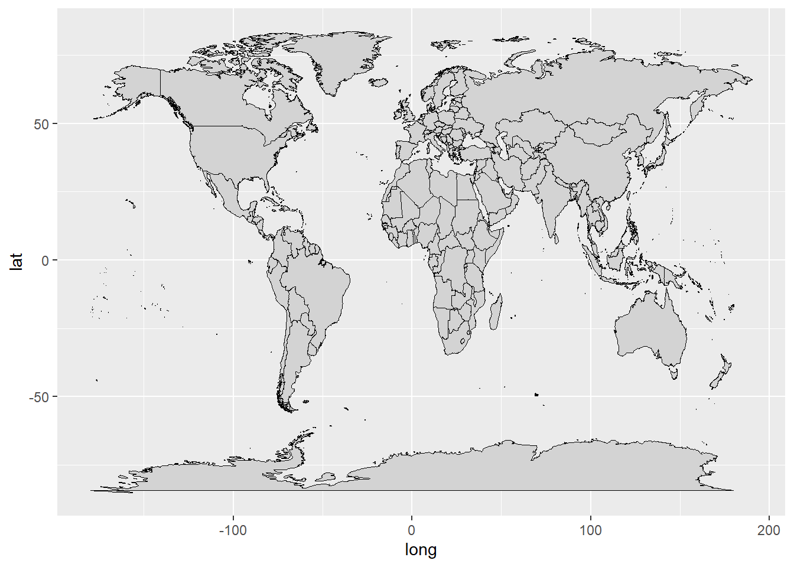
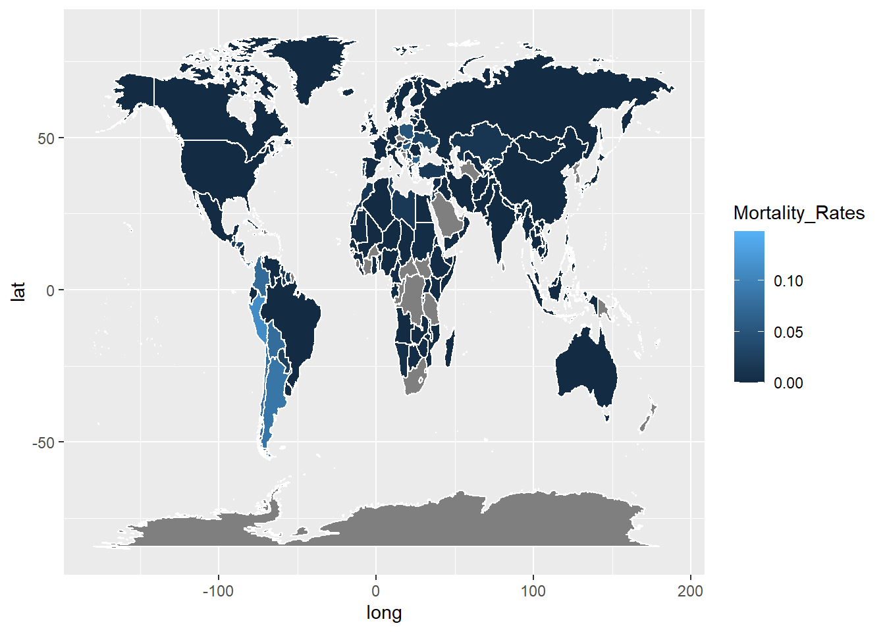

#IntroductionToTidyverse ##LIBRARIES
library(tidyverse)
library(readxl)
library(lubridate)##DATA_TABLES
bikes_tbl <- readxl:: read_excel(path = "DS-101/DS_101/00_data/01_bike_sales/01_raw_data/bikes.xlsx")
orderlines_tbl <- readxl::read_excel("DS-101/DS_101/00_data/01_bike_sales/01_raw_data/orderlines.xlsx")
bikeshops_tbl <- readxl::read_excel("DS-101/DS_101/00_data/01_bike_sales/01_raw_data/bikeshops.xlsx")##Data Wrangling and Plotting
bike_orderlines_wrangled_city_separated_tbl <- bike_orderlines_joined_tbl %>%
# 5.1 Separate category name
separate(col = category,
into = c("category.1", "category.2", "category.3"),
sep = " - ") %>%
# Separate city and state
separate(col = location,
into = c("City", "State"),
sep = ", ")%>%
# 5.2 Add the total price (price * quantity)
# Add a column to a tibble that uses a formula-style calculation of other columns
mutate(total.price = quantity* price) %>%
# 5.3 Optional: Reorganize. Using select to grab or remove unnecessary columns
# 5.3.1 by exact column name
select(-...1, -gender) %>%
# 5.3.2 by a pattern
# You can use the select_helpers to define patterns.
# Type ?ends_with and click on Select helpers in the documentation
select(-ends_with(".id"))%>%
# 5.3.3 Actually we need the column "order.id". Let's bind it back to the data
bind_cols(bike_orderlines_joined_tbl %>% select(order.id)) %>%
# 5.3.4 You can reorder the data by selecting the columns in your desired order.
# You can use select_helpers like contains() or everything()
select(order.id, contains("order"), contains("model"), contains("category"),
price, quantity, total.price,
everything()) %>%
# 5.4 Rename columns because we actually wanted underscores instead of the dots
# (one at the time vs. multiple at once)
rename(bikeshop = name) %>%
set_names(names(.) %>% str_replace_all("\\.", "_"))
# 6.2 Sales by Year and State ----
# Step 1 - Manipulate
sales_by_state_year_tbl <-bike_orderlines_wrangled_city_separated_tbl %>%
# Select columns and add a year
select(order_date, total_price, State) %>%
mutate(year = year(order_date)) %>%
# Group by and summarize year and main catgegory
group_by(State, year) %>%
summarise(sales = sum(total_price)) %>%
ungroup() %>%
# Format $ Text
mutate(sales_text = scales::dollar(sales, big.mark = ".",
decimal.mark = ",",
prefix = "",
suffix = " €"))
# Rotate plot:
theme(axis.text.x = element_text(angle = 45, hjust = 1)) +
labs(
title = "States revenue by year",
x = "", # Override defaults for x and y
y = "Revenue"
)## List of 4
## $ axis.text.x:List of 11
## ..$ family : NULL
## ..$ face : NULL
## ..$ colour : NULL
## ..$ size : NULL
## ..$ hjust : num 1
## ..$ vjust : NULL
## ..$ angle : num 45
## ..$ lineheight : NULL
## ..$ margin : NULL
## ..$ debug : NULL
## ..$ inherit.blank: logi FALSE
## ..- attr(*, "class")= chr [1:2] "element_text" "element"
## $ x : chr ""
## $ y : chr "Revenue"
## $ title : chr "States revenue by year"
## - attr(*, "class")= chr [1:2] "theme" "gg"
## - attr(*, "complete")= logi FALSE
## - attr(*, "validate")= logi TRUEsales_by_state_year_tbl%>%
# Set up x, y, fill
ggplot(aes(x = year, y = sales, fill = State)) +
# Geometries
geom_col() + # Run up to here to get a stacked bar plot
# Facet
facet_wrap(~ State) +
# Formatting
scale_y_continuous(labels = scales::dollar_format(big.mark = ".",
decimal.mark = ",",
prefix = "",
suffix = " €")) +
labs(
title = "Revenue by State and year",
subtitle = "Each product category has an upward trend",
fill = "State" # Changes the legend name
)
# Rotate plot:
theme(axis.text.x = element_text(angle = 45, hjust = 1)) +
labs(
title = "States revenue by year",
x = "", # Override defaults for x and y
y = "Revenue"
)## List of 4
## $ axis.text.x:List of 11
## ..$ family : NULL
## ..$ face : NULL
## ..$ colour : NULL
## ..$ size : NULL
## ..$ hjust : num 1
## ..$ vjust : NULL
## ..$ angle : num 45
## ..$ lineheight : NULL
## ..$ margin : NULL
## ..$ debug : NULL
## ..$ inherit.blank: logi FALSE
## ..- attr(*, "class")= chr [1:2] "element_text" "element"
## $ x : chr ""
## $ y : chr "Revenue"
## $ title : chr "States revenue by year"
## - attr(*, "class")= chr [1:2] "theme" "gg"
## - attr(*, "complete")= logi FALSE
## - attr(*, "validate")= logi TRUE##Writing files
# 7.1 Excel ----
library("writexl")
sales_by_state_year_tbl %>%
write_xlsx("DS-101/DS_101/00_data/01_bike_sales/02_wrangled_data/bike_orderlines.xlsx")
# 7.2 CSV ----
sales_by_state_year_tbl%>%
write_csv("DS-101/DS_101/00_data/01_bike_sales/02_wrangled_data/bike_orderlines.csv")
# 7.3 RDS ----
sales_by_state_year_tbl %>%
write_rds("DS-101/DS_101/00_data/01_bike_sales/02_wrangled_data/bike_orderlines.rds")#Data Acquistion ##Libraries
library(RSQLite)
library(dplyr)
library(httr)
library(glue)
library(jsonlite)
library(keyring)
library(rvest)
library(stringr)
library(purrr)
library(xopen)
library(stringi)
library(tibble)##TASK1_API_Get_Data
url= "https://api.coinpaprika.com/v1/coins/btc-bitcoin"
resp <- GET(url)
rawToChar(resp$content)## [1] "{\"id\":\"btc-bitcoin\",\"name\":\"Bitcoin\",\"symbol\":\"BTC\",\"rank\":1,\"is_new\":false,\"is_active\":true,\"type\":\"coin\",\"tags\":[{\"id\":\"segwit\",\"name\":\"Segwit\",\"coin_counter\":10,\"ico_counter\":0},{\"id\":\"cryptocurrency\",\"name\":\"Cryptocurrency\",\"coin_counter\":875,\"ico_counter\":38},{\"id\":\"proof-of-work\",\"name\":\"Proof Of Work\",\"coin_counter\":463,\"ico_counter\":15},{\"id\":\"payments\",\"name\":\"Payments\",\"coin_counter\":212,\"ico_counter\":39},{\"id\":\"sha256\",\"name\":\"Sha256\",\"coin_counter\":49,\"ico_counter\":1},{\"id\":\"mining\",\"name\":\"Mining\",\"coin_counter\":332,\"ico_counter\":17},{\"id\":\"lightning-network\",\"name\":\"Lightning Network\",\"coin_counter\":7,\"ico_counter\":0}],\"team\":[{\"id\":\"satoshi-nakamoto\",\"name\":\"Satoshi Nakamoto\",\"position\":\"Founder\"},{\"id\":\"wladimir-j-van-der-laan\",\"name\":\"Wladimir J. van der Laan\",\"position\":\"Blockchain Developer\"},{\"id\":\"jonas-schnelli\",\"name\":\"Jonas Schnelli\",\"position\":\"Blockchain Developer\"},{\"id\":\"marco-falke\",\"name\":\"Marco Falke\",\"position\":\"Blockchain Developer\"}],\"description\":\"Bitcoin is a cryptocurrency and worldwide payment system. It is the first decentralized digital currency, as the system works without a central bank or single administrator.\",\"message\":\"\",\"open_source\":true,\"started_at\":\"2009-01-03T00:00:00Z\",\"development_status\":\"Working product\",\"hardware_wallet\":true,\"proof_type\":\"Proof of Work\",\"org_structure\":\"Decentralized\",\"hash_algorithm\":\"SHA256\",\"links\":{\"explorer\":[\"https://blockchair.com/bitcoin\",\"http://blockchain.com/explorer\",\"https://blockstream.info/\",\"https://live.blockcypher.com/btc/\",\"https://btc.cryptoid.info/btc/\"],\"facebook\":[\"https://www.facebook.com/bitcoins/\"],\"reddit\":[\"https://www.reddit.com/r/bitcoin\"],\"source_code\":[\"https://github.com/bitcoin/bitcoin\"],\"website\":[\"https://bitcoin.org/\"],\"youtube\":[\"https://www.youtube.com/watch?v=Gc2en3nHxA4\\u0026\"]},\"links_extended\":[{\"url\":\"https://bitcoin.org/en/blog\",\"type\":\"blog\"},{\"url\":\"https://blockchair.com/bitcoin\",\"type\":\"explorer\"},{\"url\":\"http://blockchain.com/explorer\",\"type\":\"explorer\"},{\"url\":\"https://blockstream.info/\",\"type\":\"explorer\"},{\"url\":\"https://live.blockcypher.com/btc/\",\"type\":\"explorer\"},{\"url\":\"https://btc.cryptoid.info/btc/\",\"type\":\"explorer\"},{\"url\":\"https://www.facebook.com/bitcoins/\",\"type\":\"facebook\"},{\"url\":\"https://bitcointalk.org\",\"type\":\"message_board\"},{\"url\":\"https://www.reddit.com/r/bitcoin\",\"type\":\"reddit\",\"stats\":{\"subscribers\":1793841}},{\"url\":\"https://github.com/bitcoin/bitcoin\",\"type\":\"source_code\",\"stats\":{\"contributors\":930,\"stars\":46340}},{\"url\":\"https://twitter.com/bitcoincoreorg\",\"type\":\"twitter\",\"stats\":{\"followers\":101863}},{\"url\":\"https://electrum.org/#download\",\"type\":\"wallet\"},{\"url\":\"https://bitcoin.org/\",\"type\":\"website\"},{\"url\":\"https://www.youtube.com/watch?v=Gc2en3nHxA4\\u0026\",\"type\":\"youtube\"}],\"whitepaper\":{\"link\":\"https://static.coinpaprika.com/storage/cdn/whitepapers/215.pdf\",\"thumbnail\":\"https://static.coinpaprika.com/storage/cdn/whitepapers/217.jpg\"},\"first_data_at\":\"2010-07-17T00:00:00Z\",\"last_data_at\":\"2020-12-04T21:40:00Z\"}"resp %>%
.$content %>%
rawToChar() %>%
fromJSON()## $id
## [1] "btc-bitcoin"
##
## $name
## [1] "Bitcoin"
##
## $symbol
## [1] "BTC"
##
## $rank
## [1] 1
##
## $is_new
## [1] FALSE
##
## $is_active
## [1] TRUE
##
## $type
## [1] "coin"
##
## $tags
## id name coin_counter ico_counter
## 1 segwit Segwit 10 0
## 2 cryptocurrency Cryptocurrency 875 38
## 3 proof-of-work Proof Of Work 463 15
## 4 payments Payments 212 39
## 5 sha256 Sha256 49 1
## 6 mining Mining 332 17
## 7 lightning-network Lightning Network 7 0
##
## $team
## id name position
## 1 satoshi-nakamoto Satoshi Nakamoto Founder
## 2 wladimir-j-van-der-laan Wladimir J. van der Laan Blockchain Developer
## 3 jonas-schnelli Jonas Schnelli Blockchain Developer
## 4 marco-falke Marco Falke Blockchain Developer
##
## $description
## [1] "Bitcoin is a cryptocurrency and worldwide payment system. It is the first decentralized digital currency, as the system works without a central bank or single administrator."
##
## $message
## [1] ""
##
## $open_source
## [1] TRUE
##
## $started_at
## [1] "2009-01-03T00:00:00Z"
##
## $development_status
## [1] "Working product"
##
## $hardware_wallet
## [1] TRUE
##
## $proof_type
## [1] "Proof of Work"
##
## $org_structure
## [1] "Decentralized"
##
## $hash_algorithm
## [1] "SHA256"
##
## $links
## $links$explorer
## [1] "https://blockchair.com/bitcoin" "http://blockchain.com/explorer"
## [3] "https://blockstream.info/" "https://live.blockcypher.com/btc/"
## [5] "https://btc.cryptoid.info/btc/"
##
## $links$facebook
## [1] "https://www.facebook.com/bitcoins/"
##
## $links$reddit
## [1] "https://www.reddit.com/r/bitcoin"
##
## $links$source_code
## [1] "https://github.com/bitcoin/bitcoin"
##
## $links$website
## [1] "https://bitcoin.org/"
##
## $links$youtube
## [1] "https://www.youtube.com/watch?v=Gc2en3nHxA4&"
##
##
## $links_extended
## url type stats.subscribers
## 1 https://bitcoin.org/en/blog blog NA
## 2 https://blockchair.com/bitcoin explorer NA
## 3 http://blockchain.com/explorer explorer NA
## 4 https://blockstream.info/ explorer NA
## 5 https://live.blockcypher.com/btc/ explorer NA
## 6 https://btc.cryptoid.info/btc/ explorer NA
## 7 https://www.facebook.com/bitcoins/ facebook NA
## 8 https://bitcointalk.org message_board NA
## 9 https://www.reddit.com/r/bitcoin reddit 1793841
## 10 https://github.com/bitcoin/bitcoin source_code NA
## 11 https://twitter.com/bitcoincoreorg twitter NA
## 12 https://electrum.org/#download wallet NA
## 13 https://bitcoin.org/ website NA
## 14 https://www.youtube.com/watch?v=Gc2en3nHxA4& youtube NA
## stats.contributors stats.stars stats.followers
## 1 NA NA NA
## 2 NA NA NA
## 3 NA NA NA
## 4 NA NA NA
## 5 NA NA NA
## 6 NA NA NA
## 7 NA NA NA
## 8 NA NA NA
## 9 NA NA NA
## 10 930 46340 NA
## 11 NA NA 101863
## 12 NA NA NA
## 13 NA NA NA
## 14 NA NA NA
##
## $whitepaper
## $whitepaper$link
## [1] "https://static.coinpaprika.com/storage/cdn/whitepapers/215.pdf"
##
## $whitepaper$thumbnail
## [1] "https://static.coinpaprika.com/storage/cdn/whitepapers/217.jpg"
##
##
## $first_data_at
## [1] "2010-07-17T00:00:00Z"
##
## $last_data_at
## [1] "2020-12-04T21:40:00Z"##TASK2_Collecting_Data_from_website
get_bike_data <- function(url) {
html_bike_category <- read_html(url)
# Get the URLs
bike_url_tbl <- html_bike_category %>%
html_nodes(css = ".catalog-category-bikes__title-text") %>%
html_text()%>%
enframe(name = "No.", value = "Bike.Name")
bike_database_tbl<-bike_url_tbl%>% mutate(price=html_bike_category%>%html_nodes(css =".catalog-category-bikes__price-title")%>% html_text())
}
url= "https://www.rosebikes.de/ebike"
bike_tableout<-get_bike_data(url)
bike_tableout## # A tibble: 3 x 3
## No. Bike.Name price
## <int> <chr> <chr>
## 1 1 "\nXTRA WATT EVO ALLROAD\n" "\nab 4.299,00 €\n"
## 2 2 "\nXTRA WATT EVO\n" "\nab 2.899,00 €\n"
## 3 3 "\nXTRA WATT EVO X\n" "\nab 3.399,00 €\n"saveRDS(bike_tableout,"Challenge_TASK2.rds")#Data Visualization ##Time course of the cumulative Covid-19 cases ##Libraries
library(scales)
library(tidyverse)
library(ggplot2)
library(lubridate)
library(readxl)
library(ggthemes)
library(dplyr)##Plotting Challenge 1
covid_data_tbl <- read_csv("https://opendata.ecdc.europa.eu/covid19/casedistribution/csv")
#Table for Challenge 1 before plot
covid_data_select_tbl<- covid_data_tbl %>%
select(countriesAndTerritories,cases,dateRep,month,year,day)%>%
relocate(year,month,day)%>%
filter(year==2020,month>1) %>%
filter(day!=1)%>%
filter(countriesAndTerritories=="France"|countriesAndTerritories=="Germany"|countriesAndTerritories=="United_Kingdom"|countriesAndTerritories=="Spain"|countriesAndTerritories=="United_States_of_America")%>%
group_by(countriesAndTerritories,month)%>%
summarize(totalcases = sum(cases)) %>%
ungroup()
covid_data_select_tbl%>%
ggplot(aes(month ,totalcases, color = countriesAndTerritories)) +
geom_smooth(method = "loess", span = 0.2)+
scale_y_continuous(labels = scales::dollar_format(scale = 1/1e6,
prefix = "",
suffix = "M")) +
scale_x_continuous(breaks = seq(2, 11 , by=1),labels= c("February","March","April","May","June","July","August","September","October","November")) +
# scale_x_continuous(labels = scales::dollar_format(scale = 1/1e6,
#prefix= "",
# suffix= "February")) +
labs(
title = ("Covid-19 confirmed cases worldwide"),
subtitle = ("United States has the highest rate of cases"),
caption = "",
x = "(Year 2020)",
y = "Cumulative Cases",
color = "Country"
) +
geom_label(aes(label = (totalcases)),
hjust = "inward",
size = 3,
color = RColorBrewer::brewer.pal(n = 11, name = "RdBu")[11])  ##Libraries
library(scales)
library(tidyverse)
library(ggplot2)
library(lubridate)
library(readxl)
library(ggthemes)
library(dplyr)
library(maps)
library(ggmap)
library(maps)
library(mapdata)
library(devtools)##Mortality Rate on world map
covid_data_tbl<- read_csv("https://opendata.ecdc.europa.eu/covid19/casedistribution/csv")
#Tables for Challenge 2 before plotting
covid_data_tbl%>%
mutate(across(countriesAndTerritories, str_replace_all, "_", " ")) %>%
mutate(countriesAndTerritories = case_when(
countriesAndTerritories == "United Kingdom" ~ "UK",
countriesAndTerritories == "United States of America" ~ "USA",
countriesAndTerritories == "Czechia" ~ "Czech Republic",
TRUE ~ countriesAndTerritories
))## # A tibble: 59,770 x 12
## dateRep day month year cases deaths countriesAndTer~ geoId
## <chr> <dbl> <dbl> <dbl> <dbl> <dbl> <chr> <chr>
## 1 04/12/~ 4 12 2020 119 5 Afghanistan AF
## 2 03/12/~ 3 12 2020 202 19 Afghanistan AF
## 3 02/12/~ 2 12 2020 400 48 Afghanistan AF
## 4 01/12/~ 1 12 2020 272 11 Afghanistan AF
## 5 30/11/~ 30 11 2020 0 0 Afghanistan AF
## 6 29/11/~ 29 11 2020 228 11 Afghanistan AF
## 7 28/11/~ 28 11 2020 214 15 Afghanistan AF
## 8 27/11/~ 27 11 2020 0 0 Afghanistan AF
## 9 26/11/~ 26 11 2020 200 12 Afghanistan AF
## 10 25/11/~ 25 11 2020 185 13 Afghanistan AF
## # ... with 59,760 more rows, and 4 more variables: countryterritoryCode <chr>,
## # popData2019 <dbl>, continentExp <chr>,
## # `Cumulative_number_for_14_days_of_COVID-19_cases_per_100000` <dbl>covid_world_mortality_rate_tbl<-covid_data_tbl%>%
mutate(mortalityrate = (deaths/popData2019)*100) %>%
group_by(year,countriesAndTerritories) %>%
summarize(Mortality_Rates = sum(mortalityrate)) %>%
ungroup()%>%
select(countriesAndTerritories,Mortality_Rates,year)
#plotting without data
world <- map_data("world")
ggplot() +
geom_map(
data = world, map = world,
aes(long, lat, map_id = region) ,color = "black", fill = "lightgray", size = 0.1
) 
covid_world_mortality_rate_countries_tbl<-world%>%
mutate(across(region, str_replace_all, "_", " ") )%>%
mutate(region= case_when(
region== "UK"~"United_Kingdom" ,
region == "USA"~"United_States_of_America" ,
region == "Czechia"~"Czech_Republic",
TRUE ~ region
))
covid_world_mortality_rate_countries_tbl<-covid_world_mortality_rate_countries_tbl %>%
rename(countriesAndTerritories = region)
#Combined table before plotting
covid_combined_world_mortality_rate <- left_join(covid_world_mortality_rate_countries_tbl,covid_world_mortality_rate_tbl, by = c("countriesAndTerritories"))
ggplot(data = covid_combined_world_mortality_rate) +
geom_polygon(aes(x = long, y = lat, group = group, fill = Mortality_Rates), color= "white")